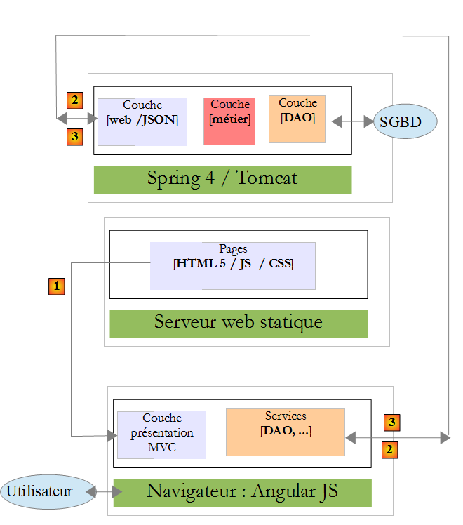
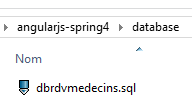
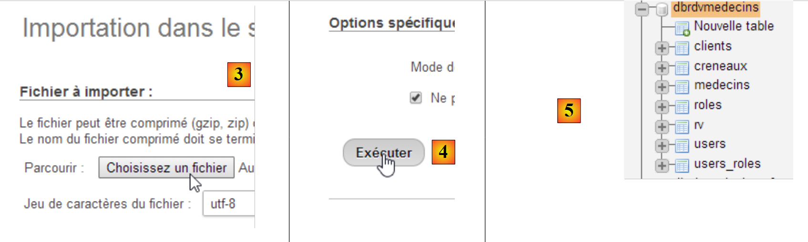
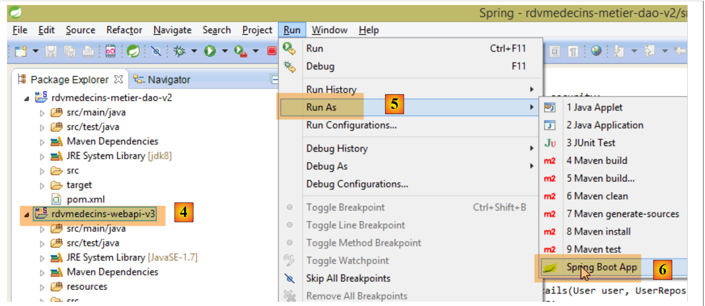
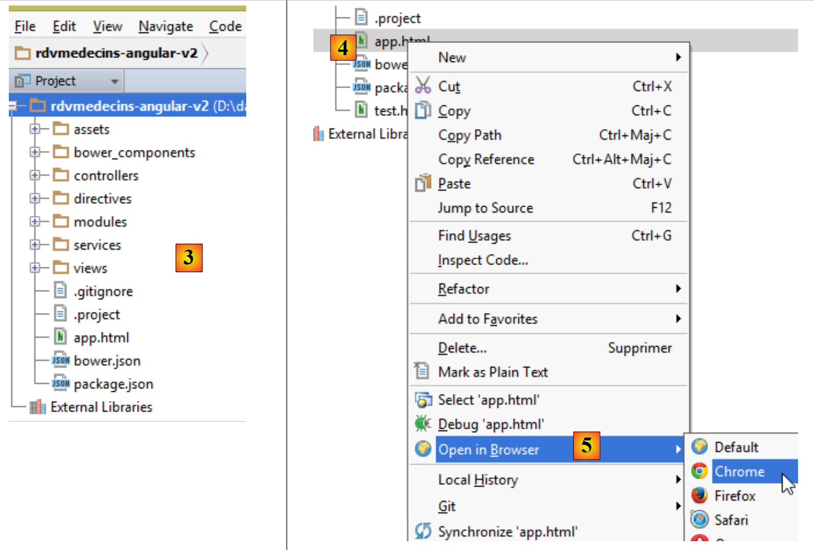
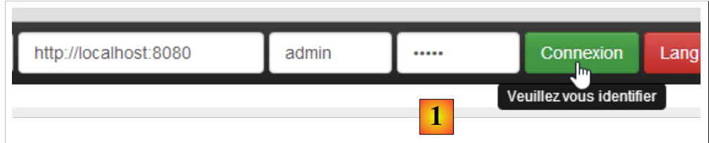
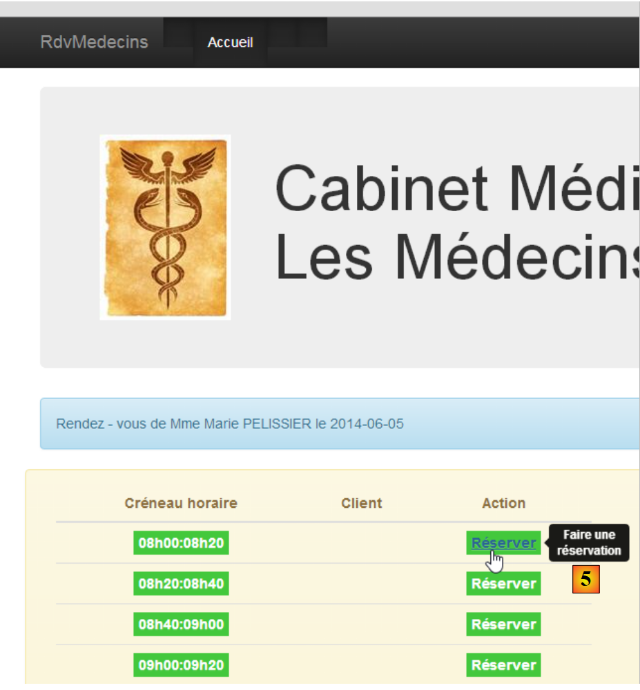
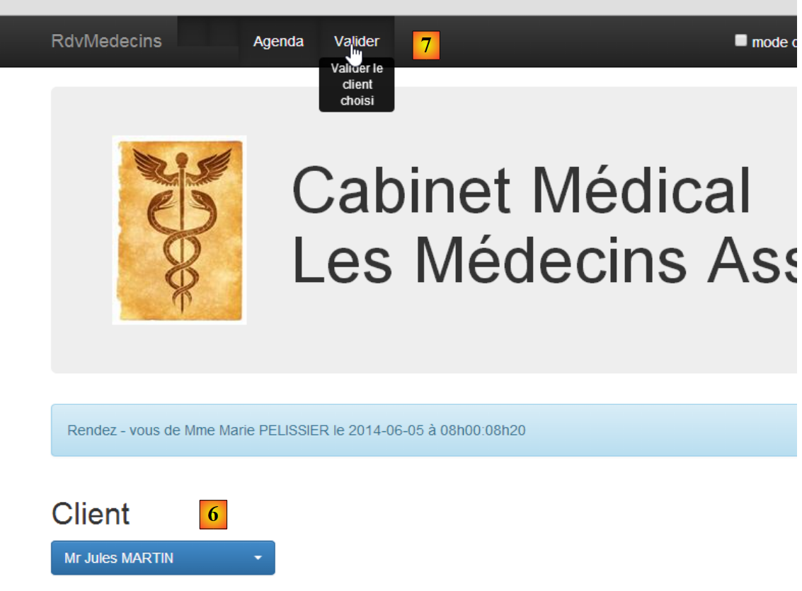

1. Introduzione
Il PDF del documento è disponibile |QUI|.
Gli esempi presenti nel documento sono disponibili |QUI|.
Qui proponiamo di introdurre due framework utilizzando un esempio client/server:
- AngularJS utilizzato per il client. Per semplicità, d'ora in poi verrà indicato come Angular;
- Spring 4 utilizzato per il server. Per semplicità, d'ora in poi verrà indicato come Spring;
La comprensione di questo documento richiede alcuni prerequisiti:
- un livello intermedio di Java EE;
- conoscenza di JPA (Java Persistence API), che verrà utilizzato per accedere a un database;
- conoscenza di almeno una versione precedente di Spring per comprendere la filosofia di questo framework;
- esperienza nell'uso di Maven per configurare progetti Java;
- una comprensione di base della comunicazione HTTP in un'applicazione web;
- tag HTML comuni;
- conoscenza di base di JavaScript;
Altre conoscenze necessarie verranno introdotte e spiegate man mano che il caso di studio procede.
Questo documento non è un corso ed è incompleto sotto molti aspetti. Per saperne di più sui due framework, è possibile consultare i seguenti riferimenti:
- [rif1]: il libro "Pro AngularJS" di Adam Freeman, pubblicato da Apress. Si tratta di un libro eccellente. Il codice sorgente degli esempi contenuti in questo libro è disponibile gratuitamente all'indirizzo [http://www.apress.com/downloadable/download/sample/sample_id/1527/];
- [rif2]: la documentazione ufficiale di AngularJS [https://docs.angularjs.org/guide]
- [rif3]: il libro "Spring Data" di O'Reilly [http://shop.oreilly.com/product/0636920024767.do], che tratta l'uso del framework [Spring Data] per l'accesso ai dati, sia da database relazionali che non relazionali (NoSQL);
- [rif4]: il libro "Pro Spring 3" pubblicato da Apress. Si tratta del predecessore di Spring 4, ma i concetti principali sono già trattati;
- [rif. 5]: la documentazione di riferimento di Spring 4 [http://docs.spring.io/spring/docs/current/spring-framework-reference/pdf/spring-framework-reference.pdf].
Le fonti utilizzate per questo documento sono quelle citate sopra, oltre all'indispensabile [http://stackoverflow.com/] per le numerose sessioni di debug.
1.1. L'architettura dell'applicazione
L'applicazione in esame avrà la seguente architettura:

- In [1], un server web fornisce pagine statiche a un browser. Queste pagine contengono un'applicazione AngularJS basata sul modello MVC (Model–View–Controller). Il modello qui comprende sia le viste che il dominio, rappresentato in questo caso dal livello [Services];
- l'utente interagirà con le viste presentate nel browser. Le sue azioni richiederanno talvolta l'interrogazione del server Spring 4 [2]. Il server elaborerà la richiesta e restituirà una risposta JSON (JavaScript Object Notation) [3]. Questa risposta verrà utilizzata per aggiornare la vista presentata all'utente.
1.2. Strumenti utilizzati
In questo documento vengono utilizzati i seguenti strumenti di sviluppo:
- Spring Tool Suite per il server Spring: disponibile come download gratuito;
- WebStorm per il client Angular: è disponibile una versione di prova gratuita della durata di un mese;
- Wampserver per la gestione del database MySQL 5: disponibile per il download gratuito;
L'installazione di questi e altri strumenti è descritta nella Sezione 6.
1.3. Caratteristiche dell'applicazione
Il codice di esempio è disponibile |QUI| come file ZIP scaricabile.
 |  |
- Il server è contenuto nelle cartelle [rdvmedecins-metier-dao-v2] e [rdvmedecins-webapi-v3];
- Il client si trova nella cartella [rdvmedecins-angular-v2];
- Lo script SQL per la generazione del database MySQL5 si trova nella cartella [database];
1.3.1. Creazione del database
Per testare l'applicazione, creiamo innanzitutto il database utilizzando lo script SQL [dbrdvmedecins.sql]. Utilizziamo lo strumento [PhpMyAdmin] di WampServer:
 |
- In [1], selezionare lo strumento [phpMyAdmin] di WampServer;
- In [2], selezionare l'opzione [Importa];
 |
- in [3], selezionare il file [database/dbrdvmedecins.sql];
- in [4], eseguirlo;
- in [5], il database viene creato.
1.3.2. Server Web / Implementazione JSON
Utilizzando Spring Tool Suite (STS), importare i due progetti Maven del server Spring 4:
 |
- In [1] e [2], importare i progetti Maven;
- in [3], specifichiamo la cartella principale per i due progetti da importare;
 |
- in [3], i progetti importati. I progetti potrebbero contenere errori. Ciascuno di essi deve utilizzare un compilatore >=1.7:
 |
Pertanto, è richiesta una versione della JVM >=1.7:
 |
Una volta risolti tutti gli errori della JVM, possiamo eseguire il progetto [rdvmedecins-webapi-v3]:
 |
- Nei paragrafi [4], [5] e [6], eseguiamo il progetto [rdvmedecins-webapi-v3] come applicazione Spring Boot;
Otteniamo quindi i seguenti log nella console STS:
1.3.3. Implementazione del client Angular
Apriamo la cartella [rdvmedecins-angular-v2] con WebStorm:
 |
- In [1], selezionare l'opzione [Apri directory];
- in [2], selezionare la cartella [rdvmedecins-angular-v2];
 |
- in [3], l'albero delle cartelle;
- In [4], seleziona la pagina principale dell'applicazione [app.html];
- in [5], aprila in un browser moderno;
 |
- in [6], la pagina di accesso dell'applicazione. Si tratta di un'applicazione per la prenotazione di appuntamenti medici. Questa applicazione è già stata trattata nel documento Introduzione ai framework JSF2, PrimeFaces e PrimeFaces Mobile;
- in [7], una casella di controllo che consente di abilitare o disabilitare la modalità [debug]. Questa modalità è indicata dalla presenza del riquadro [8], che visualizza il modello della vista corrente;
- in [9], un tempo di attesa artificiale in millisecondi. Il valore predefinito è 0 (nessuna attesa). Se N è il valore di questo tempo di attesa, qualsiasi azione dell'utente verrà eseguita dopo un tempo di attesa di N millisecondi. Ciò consente di osservare la gestione dell'attesa implementata dall'applicazione;
- in [10], l'URL del server Spring 4. In base a quanto detto prima, è [http://localhost:8080];
- in [11] e [12], il nome utente e la password dell'utente che desidera utilizzare l'applicazione. Ci sono due utenti: admin/admin (login/password) con un ruolo (ADMIN) e user/user con un ruolo (USER). Solo il ruolo ADMIN ha il permesso di utilizzare l'applicazione. Il ruolo USER è incluso esclusivamente per dimostrare la risposta del server in questo caso d'uso;
- in [13], il pulsante che consente di connettersi al server;
- in [14], la lingua dell'applicazione. Ce ne sono due: francese (predefinita) e inglese.
 |
- in [1], si effettua l'accesso;
 |
- una volta effettuato l'accesso, puoi scegliere il medico con cui desideri fissare un appuntamento [2] e la data dell'appuntamento [3];
- In [4], richiedi di visualizzare l'orario del medico selezionato per il giorno scelto;
 |
- Una volta visualizzato l'orario del medico, è possibile prenotare una fascia oraria [5];
 |
- In [6], selezionare il paziente per l'appuntamento e confermare la selezione in [7];
 |
Una volta confermato l'appuntamento, si torna automaticamente al calendario, dove il nuovo appuntamento è ora elencato. Questo appuntamento può essere cancellato in un secondo momento [7].
Le funzionalità principali sono state descritte. Sono semplici. Quelle non descritte sono funzioni di navigazione per tornare a una vista precedente. Concludiamo con le impostazioni della lingua:
 |
- in [1], si passa dal francese all'inglese;
 |
- in [2], la visualizzazione passa all'inglese, compreso il calendario;